library(tidyverse)
library(wooldridge)
data("approval")Appendix 1
ggplot2
- Key part of the
tidyverse– for many the only part - Builds a grammar of graphics
- Simple rules that drive you mad until you get it
- Process
- Initiate a plot using
ggplot - Specify aesthetics which indicate what you want to plot
- Call a
geomto say how you want to plot it - Add modifiers to change how it looks
- Initiate a plot using
Example
- Take the Wooldridge data set
approvalfrom @Approval - Do a little wrangling
- Produce some quite nice plots
Start with libraries and retrieve data.
This looks like:
head(approval) id month year sp500 cpi cpifood approve gasprice unemploy katrina
1 302 2 2001 1239.94 184.4 171.8 59.24 148.4 4.6 0
2 303 3 2001 1160.33 185.3 172.2 57.01 144.7 4.5 0
3 304 4 2001 1249.46 185.6 172.4 60.31 156.4 4.2 0
4 305 5 2001 1255.82 185.5 172.9 55.82 172.9 4.1 0
5 306 6 2001 1224.42 185.9 173.4 54.93 164.0 4.7 0
6 307 7 2001 1211.23 186.2 174.0 56.36 148.2 4.7 0
rgasprice lrgasprice X11.Sep iraqinvade lsp500 lcpifood
1 80.47723 4.387974 0 0 7.122818 5.146331
2 78.08958 4.357857 0 0 7.056460 5.148656
3 84.26724 4.433993 0 0 7.130467 5.149817
4 93.20755 4.534829 0 0 7.135544 5.152713
5 88.21947 4.479828 0 0 7.110222 5.155601
6 79.59184 4.376912 0 0 7.099391 5.159055Scatter plot
A first scatter plot, using geom_point of food against gas (petrol) prices
ggplot(approval, aes(x=lcpifood, y=lrgasprice)) + # Initiate, set aesthetics
geom_point() # Display as points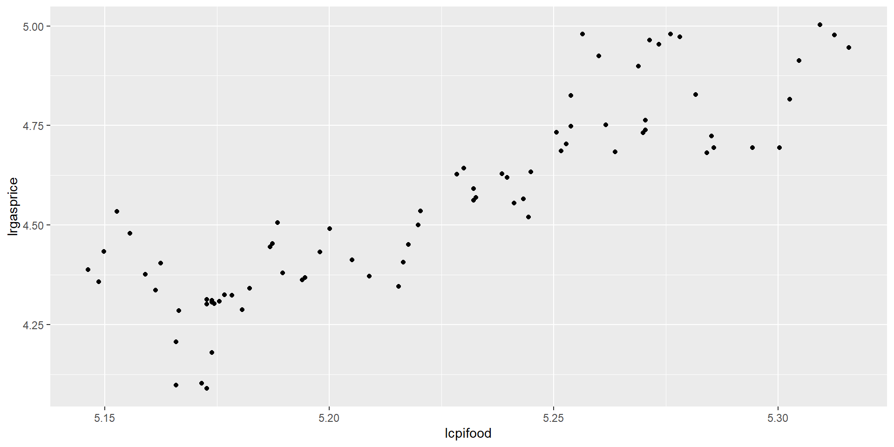
OK, I guess, a bit dull – so I add some colour. This time I specify aes in the geom - either is fine, some advantages either way.
ggplot(approval) +
geom_point(aes(x=lcpifood, y=lrgasprice, color=month)) # Colours by month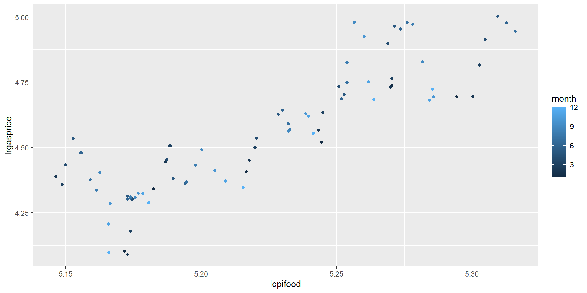
Better, but how about…
ggplot(approval) +
geom_point(aes(x=lcpifood, y=lrgasprice, color=approve), size=2, shape=17) + # Colours by popularity!
scale_color_gradient(low="red", high="green") 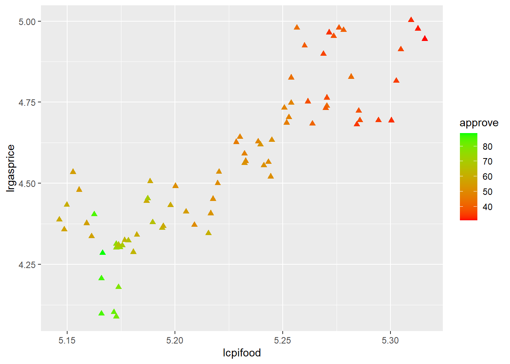
A categorical variable (a factor) is needed to get different actual colours, otherwise for a continuous variable I get shades of one color or a continuous change.
ggplot(approval) +
geom_point(aes(x=lcpifood, y=lrgasprice, color=as.factor(month), size=as.factor(year)))Warning: Using size for a discrete variable is not advised.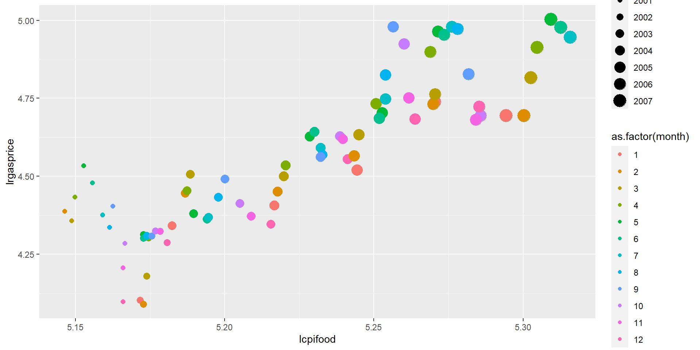
Time series plots
Our time index is a bit odd as the data set has year and month separately. Create a proper date series using:
approval %<>%
unite(date, year, month, sep="/") %>%
mutate(date = as.Date(paste0(date,"/01"), "%Y/%m/%d"))I’ve used the %<>% pipe operator to send and get back approval so this is now
id date sp500 cpi cpifood approve gasprice unemploy katrina
1 302 2001-02-01 1239.94 184.4 171.8 59.24 148.4 4.6 0
2 303 2001-03-01 1160.33 185.3 172.2 57.01 144.7 4.5 0
3 304 2001-04-01 1249.46 185.6 172.4 60.31 156.4 4.2 0
4 305 2001-05-01 1255.82 185.5 172.9 55.82 172.9 4.1 0
5 306 2001-06-01 1224.42 185.9 173.4 54.93 164.0 4.7 0
6 307 2001-07-01 1211.23 186.2 174.0 56.36 148.2 4.7 0
rgasprice lrgasprice X11.Sep iraqinvade lsp500 lcpifood
1 80.47723 4.387974 0 0 7.122818 5.146331
2 78.08958 4.357857 0 0 7.056460 5.148656
3 84.26724 4.433993 0 0 7.130467 5.149817
4 93.20755 4.534829 0 0 7.135544 5.152713
5 88.21947 4.479828 0 0 7.110222 5.155601
6 79.59184 4.376912 0 0 7.099391 5.159055Then I can plot a couple of series using two calls to geom_line
ggplot(approval) +
geom_line(aes(x=date, y=unemploy), colour="red") +
geom_line(aes(x=date, y=cpi), colour="blue") 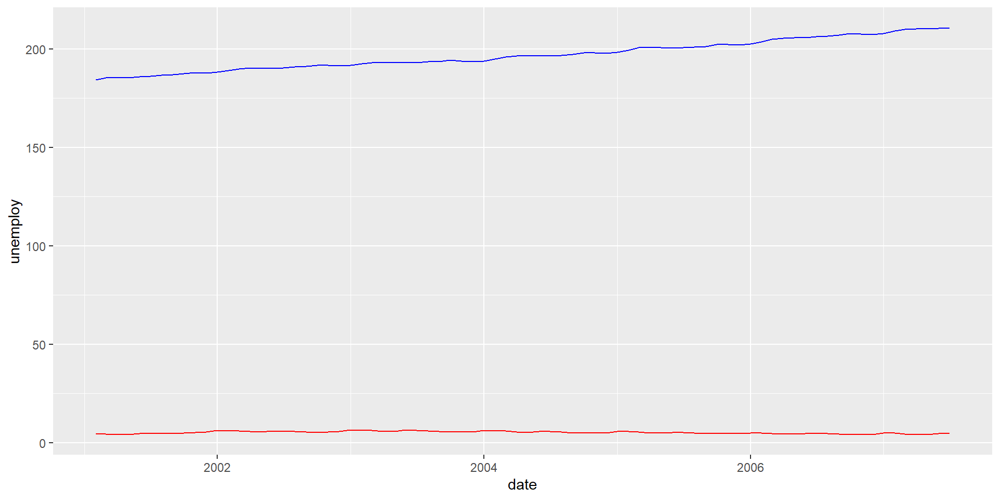
But this is pretty inefficient, as I would need a call to geom_line for every series I wanted to plot and even then scales are unsuitable. Plus the labels are not right.
This is where things really get interesting. I pivot_longer all the variables into a single column.
df <- pivot_longer(approval, cols=-c(date, id), names_to= "Var", values_to = "Val")
head(df)# A tibble: 6 × 4
id date Var Val
<int> <date> <chr> <dbl>
1 302 2001-02-01 sp500 1240.
2 302 2001-02-01 cpi 184.
3 302 2001-02-01 cpifood 172.
4 302 2001-02-01 approve 59.2
5 302 2001-02-01 gasprice 148.
6 302 2001-02-01 unemploy 4.6Great! Now I can plot Val using one call to geom_line. This time, put the graph object into p and then explicitly plot it.
p <- ggplot(df) +
geom_line(aes(x=date, y=Val))
plot(p)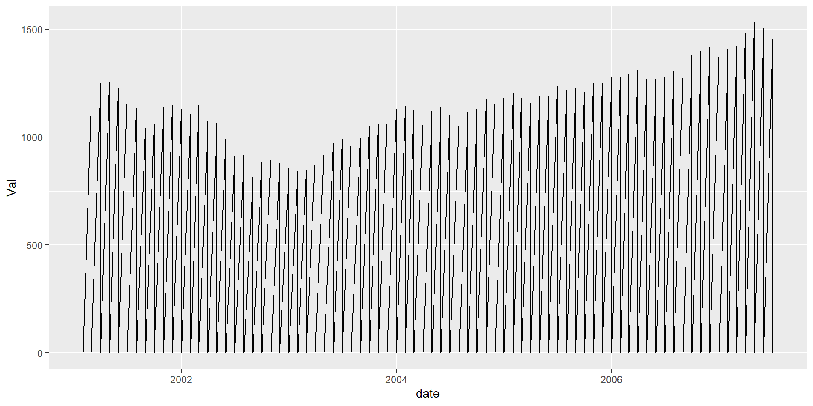
Oops! I need to tell ggplot2 to separate out the variables which are stored in Var. For this, use group:
p <- ggplot(df) +
geom_line(aes(x=date, y=Val, group=Var))
plot(p)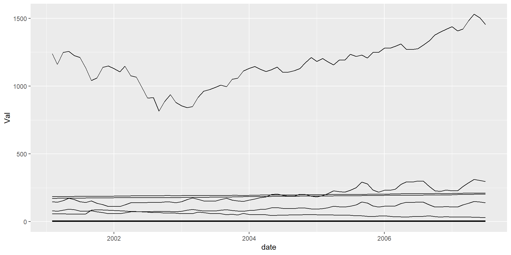
But this could better be done by using an aesthetic like colour which implies group
p <- ggplot(df) +
geom_line(aes(x=date, y=Val, colour=Var))
plot(p)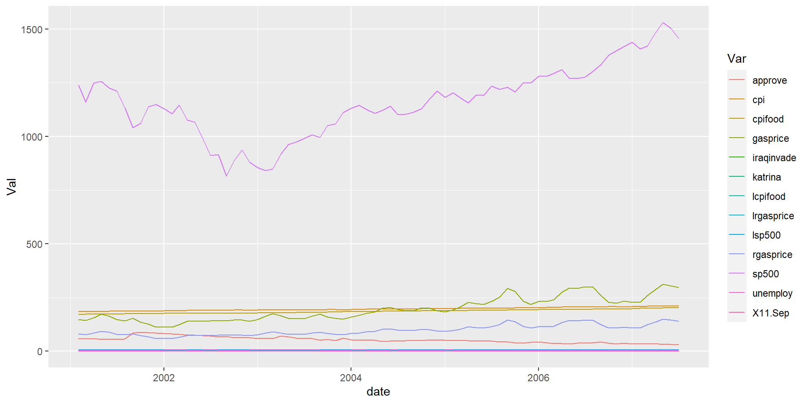
OK, but can I plot them so we can see what’s going on, like in a grid? This is where facet comes in.
p <- p +
facet_wrap(~Var, scales = "free")
plot(p)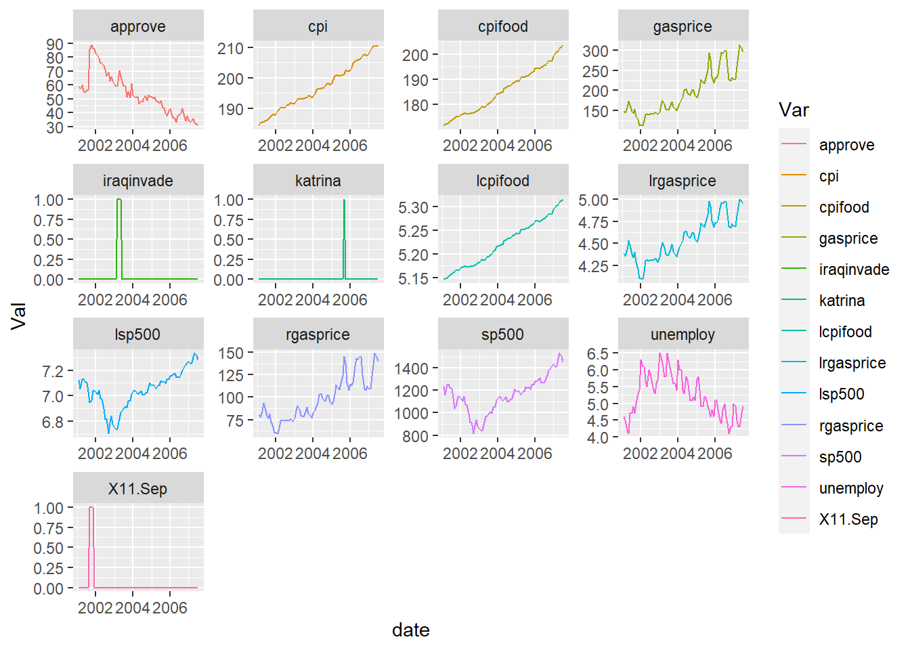
A bit more formatting…
p <- p +
theme_minimal() +
labs(title="Facet plots", x="", y="")
plot(p)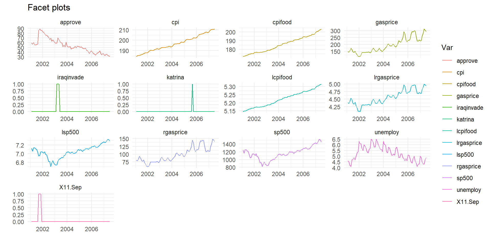
Finally all in one go, dropping the dummies, don’t store as an object. Also no legend, as series labelled in the facets. And I call a rather handy little function geom_smooth which fits (by default) a Loess smoothing line.
approval %>%
select(-iraqinvade, -katrina, -X11.Sep) %>%
pivot_longer(cols=-c(date, id), names_to="Var", values_to="Val") %>%
ggplot(aes(x=date, y=Val, group=Var, colour=Var)) +
geom_line() +
geom_smooth() + # Smoother
facet_wrap(~Var, scales = "free") +
theme_minimal() +
theme(legend.position = "none") +
labs(title="Facet plots", x="", y="")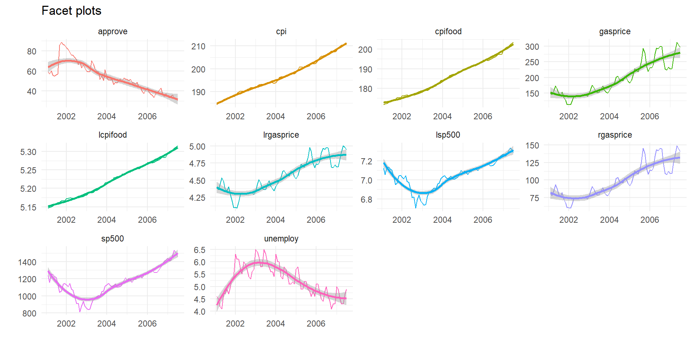
Cool, huh?